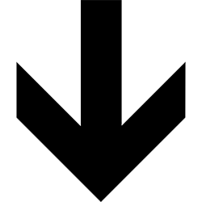
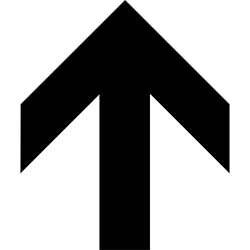
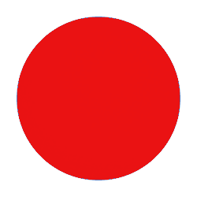
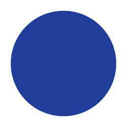

<!DOCTYPE html>
<html>
  <head>
    <!--

		RDK plugin for JsPsych
		----------------------

		This code was created in the Consciousness and Metacognition Lab at UCLA,
		under the supervision of Brian Odegaard and Hakwan Lau

		----------------------

		Copyright (C) 2017  Sivananda Rajananda

		This program is free software: you can redistribute it and/or modify
		it under the terms of the GNU General Public License as published by
		the Free Software Foundation, either version 3 of the License, or
		(at your option) any later version.

		This program is distributed in the hope that it will be useful,
		but WITHOUT ANY WARRANTY; without even the implied warranty of
		MERCHANTABILITY or FITNESS FOR A PARTICULAR PURPOSE.  See the
		GNU General Public License for more details.

		You should have received a copy of the GNU General Public License
		along with this program.  If not, see <http://www.gnu.org/licenses/>.

		-->

    <title>Dot Motion Task</title>
      <script src = "https://ajax.googleapis.com/ajax/libs/jquery/3.2.1/jquery.min.js"></script>
      <script src="jspsych-6.0.1/jspsych.js"></script>
      <script src="jspsych-6.0.1/jspsych-6.0.1/plugins/jspsych-html-keyboard-response.js"></script>
      <script src="jspsych-6.0.1/jspsych-6.0.1/plugins/jspsych-instructions.js"></script>
      <script src="jspsych-6.0.1/jspsych-6.0.1/plugins/jspsych-dotmotion.js"></script>
      <script src="jspsych-6.0.1/jspsych-6.0.1/plugins/jspsych-fullscreen.js"></script>
      <link href="jspsych-6.0.1/css/jspsych.css" rel="stylesheet" type="text/css"></link>
  </head>
  <body style="background-color:grey;"></body>
  <script>

    //The main timeline to be fed into jsPsych.init
    var timeline = [];

    // Loading config and trial data file synchronously
    var config, headers, lines;

    $.ajax({
      url: 'config.json',
      async: false,
      dataType: 'json',
      success: function (response) {
        config = response[0]
      }
    });

    $.ajax({
        url: "data.csv",
        async: false,
        dataType: "text",
        success: function (response) {
          processData(response);
        }
     });

    // fullscreen mode
    /*
    timeline.push({
      type: 'fullscreen',
      fullscreen_mode: true,
      message: '<p>The experiment will switch to full screen mode when you press the button below</p>',
      button_label: 'Start Experiment'
    });
    */


    //---------Create trials---------


    var cue = {
      type: "dotmotion",
      stage: "cue", // cue or task
      choices: jsPsych.NO_KEYS, //Choices available to be keyed in by participant

      task: jsPsych.timelineVariable('task'),
      cue_shape: jsPsych.timelineVariable('cue_shape'),

      trial_duration: config.cue_duration, //Duration of each cue in ms
    }

    var fixation = {
      type: 'html-keyboard-response',
      stimulus: '',
      choices: jsPsych.NO_KEYS,
      trial_duration: config.inter_trial_interval,

      on_start: function(fixation){
        // get data from previous trial
        var data = jsPsych.data.get().last(1).values()[0];

        // prompt whether the previous trial was correct or not
        if(typeof data.correct === "undefined" || config.fixation_cross){
          fixation.prompt = '<div style="font-size:60px;">+</div>';
        }else if(data.correct){
          fixation.prompt = '<div class = centerbox><div style="color:green;font-size:60px"; class = center-text>Correct!</div></div>';
        }else{
          fixation.prompt = '<div class = centerbox><div style="color:red;font-size:60px"; class = center-text>Incorrect</div></div>';
        }

        // dynamically change inter_trial_interval
        if(data.response_ends_trial && data.fill_ITT && data.rt != -1){
  				fixation.trial_duration += Math.floor(data.trial_duration - data.rt);
  			}
      }
    }

    var stimulus = {
      type: "dotmotion",
      stage: "task", // cue or task
      RDK_type: 3, //The type of RDK used
      choices: ['a', 'l'], //Choices available to be keyed in by participant

      phase: jsPsych.timelineVariable('phase'),
      task: jsPsych.timelineVariable('task'),
      correct_choice: jsPsych.timelineVariable('correct_response'),
      coherent_direction: jsPsych.timelineVariable('coherent_direction'),
      coherent_color: jsPsych.timelineVariable('coherent_color'),
      cue_shape: jsPsych.timelineVariable('cue_shape'),
      motionCoherence:  jsPsych.timelineVariable('motionCoherence'),
      colorCoherence: jsPsych.timelineVariable('colorCoherence'),

      number_of_dots: config.number_of_dots, //Total number of dots in the aperture
      trial_duration: config.trial_duration, //Duration of each trial in ms

      response_ends_trial: config.response_ends_trial, //Whether response ends the trial or not
			fill_ITT: config.fill_ITT, // Whether to standardize trial length or not, condition on response_ends_trial being true

      responseAfterTimeout: config.responseAfterTimeout,
      dot_timeout: config.dot_timeout,

      on_start: function(stimulus){
        var data = jsPsych.data.get().last(2).values()[0];

        if(stimulus.phase == '1.1'){
          if(typeof data.correct === "undefined"){
            stimulus.motionCoherence = 0.8;
            console.log(currentMotionCoherence);
          }else if(data.correct){
            if(currentMotionCoherence > minCoherence){
              currentMotionCoherence = currentMotionCoherence - learningRate;
            }
            stimulus.motionCoherence = currentMotionCoherence;
            console.log(currentMotionCoherence);
          }else{
            if(currentMotionCoherence < maxCoherence){
              if(currentMotionCoherence + 2*learningRate >= maxCoherence){
                currentMotionCoherence = maxCoherence;
              }else{
                currentMotionCoherence = currentMotionCoherence + 2*learningRate;
              }
            }
            stimulus.motionCoherence = currentMotionCoherence;
            console.log(currentMotionCoherence);
          }
        }else if(stimulus.phase == '1.2'){
          if(typeof data.correct === "undefined"){
            stimulus.colorCoherence = 0.8;
            console.log(currentColorCoherence);
          }else if(data.correct){
            if(currentColorCoherence > minCoherence){
              currentColorCoherence = currentColorCoherence - learningRate;
            }
            stimulus.colorCoherence = currentColorCoherence;
            console.log(currentColorCoherence);
          }else{
            if(currentColorCoherence < maxCoherence){
              if(currentColorCoherence + 2*learningRate >= maxCoherence){
                currentColorCoherence = maxCoherence;
              }else{
                currentColorCoherence = currentMotionCoherence + 2*learningRate;
              }
            }
            stimulus.colorCoherence = currentColorCoherence;
            console.log(currentColorCoherence);
          }
        }else if(stimulus.phase == '3'){
          stimulus.stage = 'task_exp';
          config.fixation_cross = true;
        }
      }
    }

    //convert vertical/horizontal to degree notation
    var degrees;
    if (config.coherentAxis ==  'verticalAxis'){
      degrees = 270;
    }else if (config.coherentAxis ==  "horizontalAxis") {
      degrees = 180;
    }

    // --------------------
    // FIRST PHASE
    // --------------------

    /* define introduction block */
    var introduction = {
      type: 'instructions',
      pages: [
          'Welcome to the experiment. Click next to begin.',
          "<p>In this experiment, a swarm of red and blue moving dots appear on the screen.</p> Click next for a visual."
      ],
      show_clickable_nav: true,
      post_trial_gap: 1000
    };
    timeline.push(introduction);
    timeline.push(stimulus);

    /* define instructions block */
    var instructions_motion = {
      type: 'instructions',
      pages: ["<p>Now that you've seen the stimulus,<br/> " +
      "there are two sets of tasks:</p> <strong>Motion</strong> tasks and <strong>Color</strong> tasks",

          "<p>In the <strong>motion</strong> task, you must discern which direction the majority of the dots are going.</p>" +
          "<p>If the majority of dots are going <strong>downwards</strong>, " +
          "press the letter A as fast as you can.</p>" +
          "<p>If the majority of dots are going <strong>upwards</strong>, press the letter L " +
          "as fast as you can.</p>" +
          "<div style='width: 700px;'>"+
          "<div style='float: left;'></img>" +
          "<p class='small'><strong>Press the A key</strong></p></div>" +
          "<div class='float: right;'></img>" +
          "<p class='small'><strong>Press the L key</strong></p></div>" +
          "</div>",

          "<p>In the first stage of the experiment, we will continually increase the difficulty " +
          "of the tasks until we find an appropriate level for you.</p><p>We will begin with just the " +
          "motion task. Remember to press A when the majority of the dots are moving down and L for up.</p>" +
          "Please ready your fingers on the A and L keys and press next whenever you're ready!"
      ],
      show_clickable_nav: true,
      post_trial_gap: 1000
    };

    /* define instructions block */
    var instructions_color = {
      type: 'instructions',
      pages: ["<p>In the <strong>color</strong> task, you must discern the color of the majority of the dots.</p>" +
          "<p>If the majority of dots are <strong>red</strong>, " +
          "press the letter A as fast as you can.</p>" +
          "<p>If the majority of dots are <strong>blue</strong>, press the letter L " +
          "as fast as you can.</p>" +
          "<div style='width: 700px;'>"+
          "<div style='float: left;'></img>" +
          "<p class='small'><strong>Press the A key</strong></p></div>" +
          "<div class='float: right;'></img>" +
          "<p class='small'><strong>Press the L key</strong></p></div>" +
          "</div>",

          "<p>As in the previous stage of the experiment, we will continually increase the difficulty " +
          "of the tasks until we find an appropriate level for you.</p><p>We will begin with just the " +
          "motion task. Remember to press A when the majority of the dots are mostly red and L for mostly blue.</p>" +
          "Please ready your fingers on the A and L keys and press next whenever you're ready!"
      ],
      show_clickable_nav: true,
      post_trial_gap: 1000
    };

    //staircasing phase
    var numTrials = 10;
    var currentMotionCoherence = 0.8;
    var currentColorCoherence = 0.8;
    var learningRate = 0.025;
    var minCoherence = 0.55;
    var maxCoherence = 0.90;
    var percentageCorrect = 0;

    var motion_stimulus = [
      {// Motion trial 1
        phase: '1.1',
        task: 'motion',
        correct_response: 'a', //The correct answer for Condition 2
				coherent_direction: degrees, //The coherent direction for Condition 1 (dots move down/left)
				coherent_color: 'blue'
			},
			{// Motion trial 2
        phase: '1.1',
				task: 'motion',
        correct_response: 'l', //The correct answer for Condition 2
				coherent_direction: degrees - 180, //The coherent direction for Condition 2 (dots move up/right)
				coherent_color: 'red'
			},{// Motion trial 3
        phase: '1.1',
        task: 'motion',
        correct_response: 'a', //The correct answer for Condition 2
				coherent_direction: degrees, //The coherent direction for Condition 1 (dots move down/left)
				coherent_color: 'red'
			},
			{// Motion trial 4
        phase: '1.1',
				task: 'motion',
        correct_response: 'l', //The correct answer for Condition 2
				coherent_direction: degrees - 180, //The coherent direction for Condition 2 (dots move up/right)
				coherent_color: 'blue'
			}
    ]

    var color_stimulus = [
      {// Color trial 1
        phase: '1.2',
        task: 'color',
        correct_response: 'a',
        coherent_direction: degrees,
				coherent_color: 'red'
			},
			{// Color trial 2
        phase: '1.2',
				task: 'color',
        correct_response: 'l',
        coherent_direction: degrees - 180,
				coherent_color: 'blue'
			},{// Color trial 3
        phase: '1.2',
        task: 'color',
        correct_response: 'a',
        coherent_direction: degrees,
				coherent_color: 'red'
			},
			{// Color trial 4
        phase: '1.2',
				task: 'color',
        correct_response: 'l',
        coherent_direction: degrees - 180,
				coherent_color: 'blue'
			}
    ]

    timeline.push(instructions_motion);

    for(i = 0; i < numTrials; i++){
      var stim_sequence = {
        timeline: [stimulus, fixation],
        timeline_variables: motion_stimulus,
        randomize_order: true,
        repetitions: 1,
        sample: {
            type: "without-replacement",
            size: 1
          }
        }
      timeline.push(stim_sequence);
    }

    timeline.push(instructions_color);

    for(i = 0; i < numTrials; i++){
      var stim_sequence = {
        timeline: [stimulus, fixation],
        timeline_variables: color_stimulus,
        randomize_order: true,
        repetitions: 1,
        sample: {
            type: "without-replacement",
            size: 1,
                }
        }
      timeline.push(stim_sequence);
    }

    // --------------------
    // SECOND PHASE
    // --------------------

    var instructions_cue = {
      type: 'instructions',
      pages: [
          '<p>Welcome to the SECOND PHASE. We introduce a set of cues that appear before each of the two tasks (motion and color)</p>' +
          'Click next for a visual example.'
      ],
      show_clickable_nav: true,
      post_trial_gap: 1000
    };
    timeline.push(instructions_cue);
    timeline.push(cue, stimulus);

    /* define instructions block */
    var instructions_cue2 = {
      type: 'instructions',
      pages: [
        "<p> A series of cues will appear on the screen.You are asked to match them to the appropriate task (motion or color).</p>",
        "<p>To cue the <strong>motion</strong> task, you will be shown of the two cues below.</p>" +
          "<div style='width: 700px;'>"+
          "<div style='float: left;'></img>" +
          "<p class='small'><strong>Press the Q key</strong></p></div>" +
          "<div class='float: right;'></img>" +
          "<p class='small'><strong>Press the Q key</strong></p></div>" +
          "</div>",
        "<p>To cue the <strong>color</strong> task, you will be shown of the two cues below.</p>" +
          "<div style='width: 700px;'>"+
          "<div style='float: left;'></img>" +
          "<p class='small'><strong>Press the P key</strong></p></div>" +
          "<div class='float: right;'></img>" +
          "<p class='small'><strong>Press the P key</strong></p></div>" +
          "</div>",
        "<p>In this stage of the experiment, we will display a series of cues " +
          "to give you practice associating cues and their tasks.</p><p>We will begin with just the " +
          "motion task. Remember to press Q for motion task cues (diamond, square) and P for color task cues (triangle, circle).</p>" +
          "Please ready your fingers on the Q and P keys and press next whenever you're ready!"
      ],
      show_clickable_nav: true,
      post_trial_gap: 1000
    };
    timeline.push(instructions_cue2);

    var cue_phase = {
      type: "html-keyboard-response",
      stimulus: jsPsych.timelineVariable('stimulus'),
      choices: ['p', 'q'],
      data: jsPsych.timelineVariable('data'),
      trial_duration: config.trial_duration,
      on_finish: function(data){
        data.correct = data.key_press == jsPsych.pluginAPI.convertKeyCharacterToKeyCode(data.correct_response);
      }
    }

    var cue_response = {
      type: "html-keyboard-response",
      stimulus: jsPsych.timelineVariable('stimulus'),
      choices: jsPsych.NO_KEYS,
      trial_duration: config.cue_duration, //Duration of each cue in ms
      on_start: function(cue_response){
        // get data from previous trial
        var data = jsPsych.data.get().last(1).values()[0];
        if(data.key_press === null){
          cue_response.trial_duration = 0;
        }else{
          console.log(data.cue, data.key_press, data.correct);
          cue_response.stimulus = generateCue(data.cue, data.key_press, data.correct);
        }
      }
    }

    var cue_fixation = {
      type: 'html-keyboard-response',
      stimulus: '<div style="float: center; font-size:60px; color:black;">+</div>',
      choices: jsPsych.NO_KEYS,
      trial_duration: config.inter_trial_interval
    }

    function generateCue(cue, answer = '', correct = true){
      if(answer == 81){
          if(correct){
            return "<div class='row'>"+
                      "<div class='column' style='border: solid green'>" +
                      "<p class='small'><strong>Motion Trial</strong></p></div>" +
                      "<div class='column'>" +
                      "<p class='small'><strong>Color Trial</strong></p></div>" +
                   "</div>" +
                   "<div style='width: 700px;'>" +
                      "<div style='float: center;'></img></div>" +
                   "</div>"
          }else{
            return "<div class='row'>"+
                      "<div class='column' style='border: solid red'>" +
                      "<p class='small'><strong>Motion Trial</strong></p></div>" +
                      "<div class='column'>" +
                      "<p class='small'><strong>Color Trial</strong></p></div>" +
                   "</div>" +
                   "<div style='width: 700px;'>" +
                      "<div style='float: center;'></img></div>" +
                   "</div>"
          }
      }else if(answer == 80){
        if(correct){
          return "<div class='row'>"+
                    "<div class='column'>" +
                    "<p class='small'><strong>Motion Trial</strong></p></div>" +
                    "<div class='column' style='border: solid green'>" +
                    "<p class='small'><strong>Color Trial</strong></p></div>" +
                 "</div>" +
                 "<div style='width: 700px;'>" +
                    "<div style='float: center;'></img></div>" +
                 "</div>"
        }else{
          return "<div class='row'>"+
                    "<div class='column'>" +
                    "<p class='small'><strong>Motion Trial</strong></p></div>" +
                    "<div class='column' style='border: solid red'>" +
                    "<p class='small'><strong>Color Trial</strong></p></div>" +
                 "</div>" +
                 "<div style='width: 700px;'>" +
                    "<div style='float: center;'></img></div>" +
                 "</div>"
        }
      }else{
        return "<div class='row'>"+
                  "<div class='column'>" +
                  "<p class='small'><strong>Motion Trial</strong></p></div>" +
                  "<div class='column'>" +
                  "<p class='small'><strong>Color Trial</strong></p></div>" +
               "</div>" +
               "<div style='width: 700px;'>" +
                  "<div style='float: center;'></img></div>" +
               "</div>"
      }
    }

    var cue_stimuli = [
      { stimulus:  generateCue('square'), data: {task: 'motion', cue: 'square', correct_response: 'p'}},
      { stimulus:  generateCue('diamond'), data: {task: 'motion', cue: 'diamond', correct_response: 'p'}},
      { stimulus:  generateCue('circle'), data: {task: 'color', cue: 'circle', correct_response: 'q'}},
      { stimulus:  generateCue('triangle'), data: {task: 'color', cue: 'triangle', correct_response: 'q'}}
    ];

    for(i = 0; i < numTrials; i++){
      var cue_sequence = {
        timeline: [cue_phase, cue_response,cue_fixation],
        timeline_variables: cue_stimuli,
        randomize_order: true,
        repetitions: 1,
        sample: {
            type: "without-replacement",
            size: 1
          }
        }
      timeline.push(cue_sequence);
    }

    // --------------------
    // THIRD PHASE
    // --------------------
    var instructions_exp = {
      type: 'instructions',
      pages: [
          'Welcome to the THIRD PHASE. Click next to begin the experiment'
      ],
      show_clickable_nav: true,
      post_trial_gap: 1000
    };
    timeline.push(instructions_exp);

    function processData(allText) {
        var allTextLines = allText.split(/\r\n|\n/);
        headers = allTextLines[0].split(',');
        lines = [];

        for (var i=1; i<allTextLines.length; i++) {
            var data = allTextLines[i].split(',');
            if (data.length == headers.length) {
                var tarr = [];
                for (var j=0; j<headers.length; j++) {
                    tarr.push(data[j]);
                }
                lines.push(tarr);
            }
        }
    }

    //generate timeline variables
    function generateTrial(vars){
      var cue_shape;
      if(vars[5] == 'c'){ //circle (color)
        cue_shape = 1;
      }else if(vars[5] == 't'){ //triangle (color)
        cue_shape = 3;
      }else if(vars[5] == 'd'){ //diamond (motion)
        cue_shape = 4;
      }else if(vars[5] == 'r'){ //rectangle (motion)
        cue_shape = 2;
      }

      var correct_response;
      if(vars[4] == 'motion' && vars[6] == 'up'){
        correct_response = 'l';
      }else if(vars[4] == 'motion' && vars[6] == 'down'){
        correct_response = 'a';
      }else if(vars[4] == 'color' && vars[8] == 'red'){
        correct_response = 'a';
      }else if(vars[4] == 'color' && vars[8] == 'blue'){
        correct_response = 'l';
      }

      var coherent_direction;
      if(vars[6] == 'up'){
        coherent_direction = degrees - 180;
      }else if(vars[6] == 'down'){
        coherent_direction = degrees;
      }

      var coherent_color;
      if(vars[8] == 'red'){
        coherent_color = 'red';
      }else if(vars[8] == 'blue'){
        coherent_color = 'blue';
      }

      return [{
          //id: vars[0],
          //block: vars[1],
          //mblock: vars[2],
          //trial: vars[3],
          task: vars[4],
          cue_shape: cue_shape,
          correct_response: correct_response,
          coherent_direction: coherent_direction,
          motionCoherence: vars[7],
          coherent_color: coherent_color,
          colorCoherence: vars[9],
          phase: '3'
        }];
    }

    for (line in lines){
      var trial_vars = generateTrial(lines[line]); //generate timeline variables

      if(lines[line][3] == 1){
        var cue_sequence = {
          timeline: [cue, fixation, stimulus, fixation],
          timeline_variables: trial_vars
          }
        timeline.push(cue_sequence);
      }else{
        var stim_sequence = {
          timeline: [stimulus, fixation],
          timeline_variables: trial_vars
          }
        timeline.push(stim_sequence);
      }
    }
		//---------Run the experiment---------

		//Initiate the experiment
		jsPsych.init({
			timeline: timeline,
      //show_progress_bar: true,
			on_finish: function(){ //Execute this when the experiment finishes
				//jsPsych.data.localSave('testSave.csv', 'csv'); //Save the data locally in a .csv file
				jsPsych.data.displayData(); //Display the data onto the browser screen

        //jsPsych.data.getInteractionData(); LOOK INTO THIS

        // select task trials
        var task_trials = jsPsych.data.get().filter({stage: 'task_exp'});
        var rt_data = task_trials.select('rt').values;
        var acc_data = task_trials.select('correct').values;

        outputData(rt_data,acc_data);
			}
		})

    function outputData(rt,acc){
      headers.push('rt');
      headers.push('correct');
      for(line in lines){
        lines[line].push(rt[line]);
        lines[line].push(acc[line]);
      }

      let csv;
      for(let col = 0; col < headers.length; col++){
        csv += headers[col] + ",";
      }
      csv += '\r\n';

      // Loop the array of objects
      for(let row = 0; row < lines.length; row++){
        for(let col = 0; col < headers.length; col++){
          csv += lines[row][col] + ",";
        }
        csv += '\r\n';
      }

      // Once we are done looping, download the .csv by creating a link
      let link = document.createElement('a')
      link.id = 'download-csv'
      link.setAttribute('href', 'data:text/plain;charset=utf-8,' + encodeURIComponent(csv));
      link.setAttribute('download', 'output.csv');
      document.body.appendChild(link)
      document.querySelector('#download-csv').click()
    }

  </script>
  </html>
